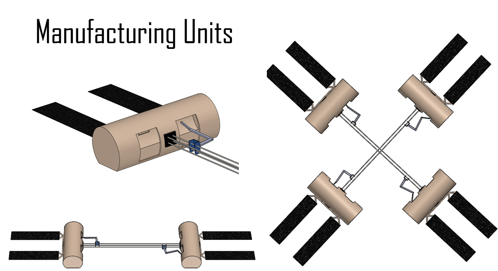
The AMU Genesis
Initial core concept of our Semi-Autonomous Manufacturing Units (AMUs). Designed for adaptive re-entry and on-orbit re-tasking.
The bridge from vision to reality is built on the precision of architecture and the rigor of simulation. Below is the technical log of our ongoing iterative development.

The AMU Genesis
Initial core concept of our Semi-Autonomous Manufacturing Units (AMUs). Designed for adaptive re-entry and on-orbit re-tasking.
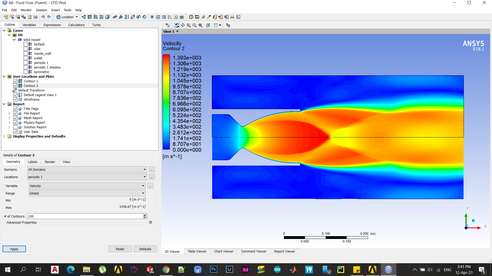
Fluid Dynamic Precision
Nozzle optimization using Computational Fluid Dynamics (CFD). Fine-tuning the geometry to maximize thrust efficiency.
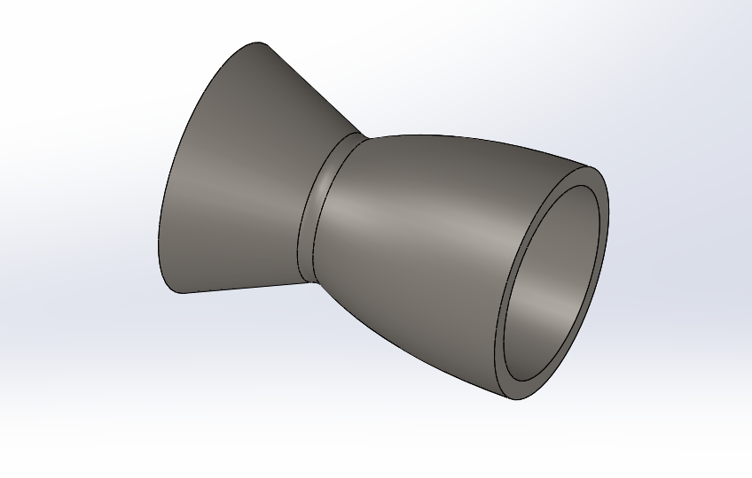
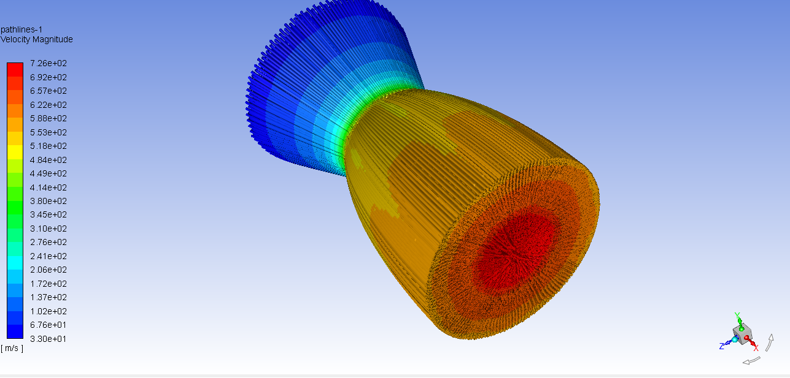
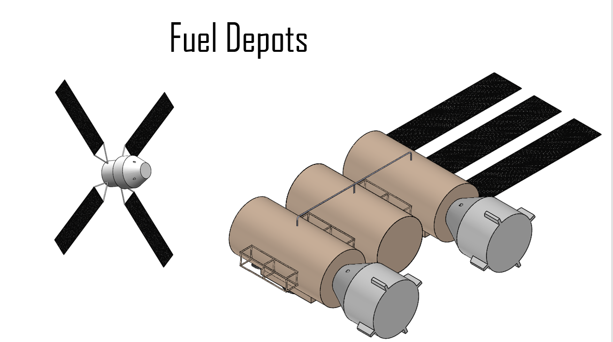
Zero-Emission Refueling
Sustainable fuel depot concepts forming the logistical nodes for a healthy interplanetary economy.
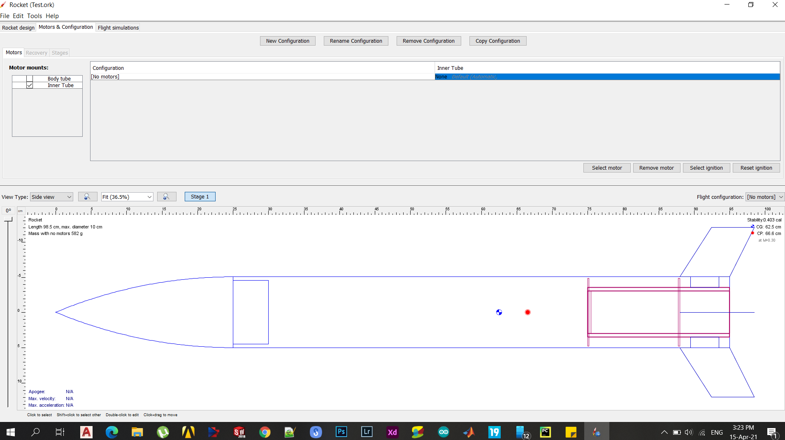
Ascent Characterization
Iterative rocket simulation logs (3000m+ thresholds) to test behavioral stability during the initial boost phase.
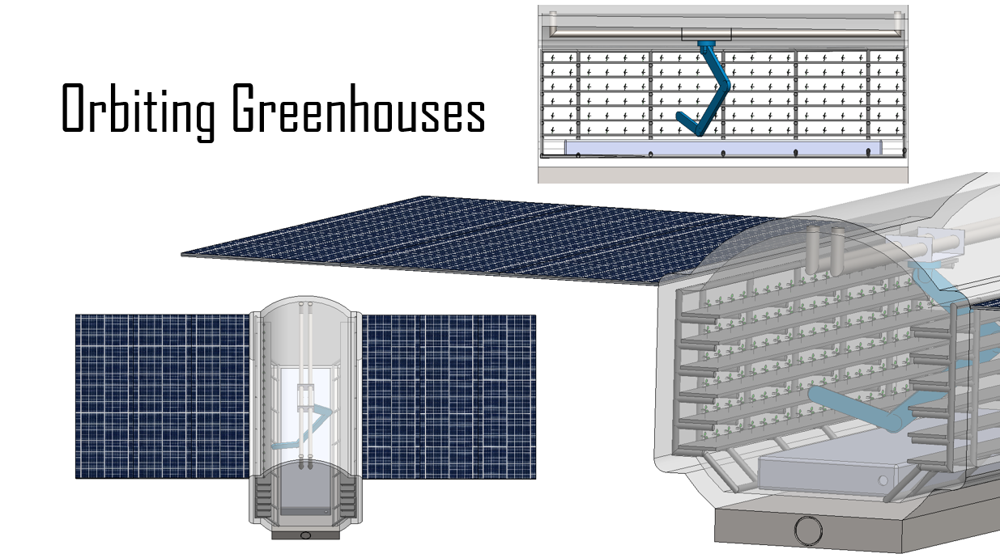
Adaptive Agricultural Ecosystems
Modular greenhouse designs for orbit, lunar surface, or subterranean non-terrestrial environments.
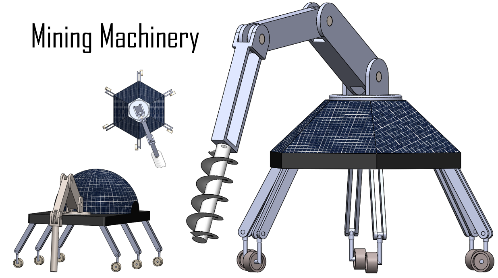
The Extractor Archetype
Heavy-extraction rover conceptualization. Articulated walking gears for navigating low-gravity asteroid regolith.
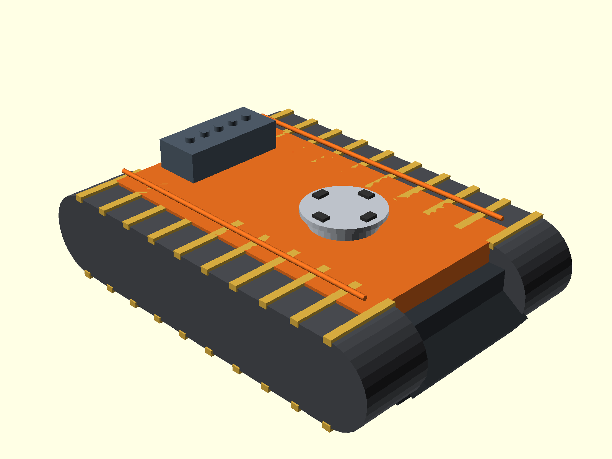
STRIDER-M Heavy Transporter
Continuous dual-track mobile surface platform engineered for extreme terrain mobility, autonomous cargo haulage, and wind turbine mast tilt-up operations.
View CAD Specifications →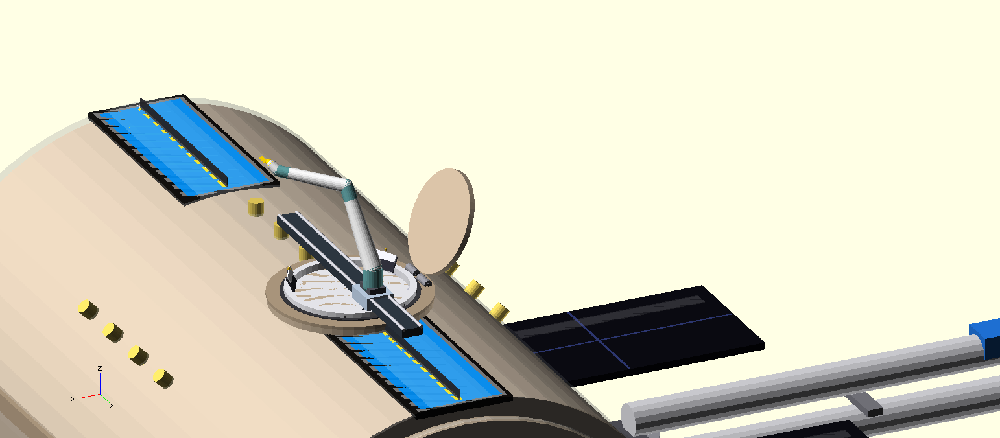
CORA-M 7-DoF Manipulator
Seven-degrees-of-freedom collaborative robotic arm designed for SpaceROS automated tooling, truss grappling, and precision surface assembly.
View CAD Specifications →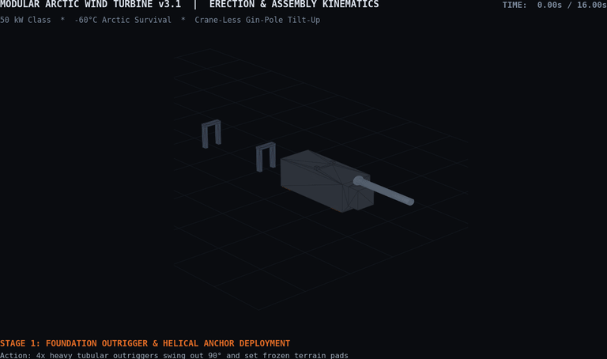
Modular Arctic Wind (v3)
A-frame gin-pole automated tilt-up wind energy system for polar microgrids. Developed as a sister initiative.
Explore Arctic Wind Repo →